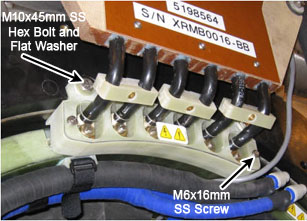
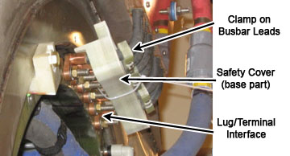
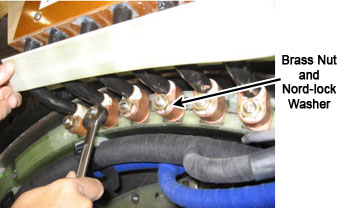
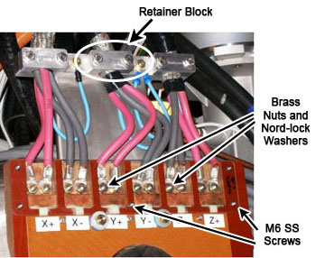
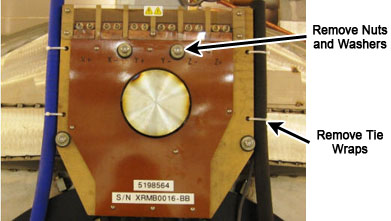
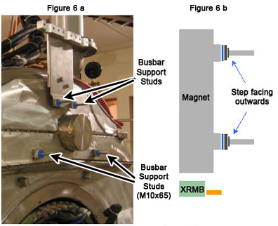
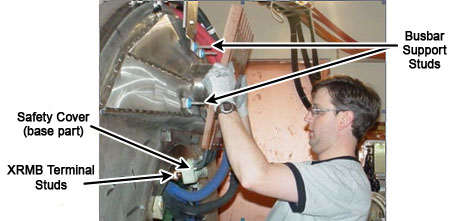
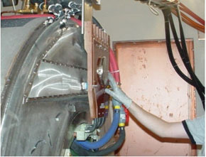
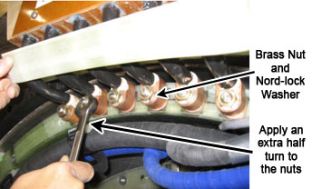
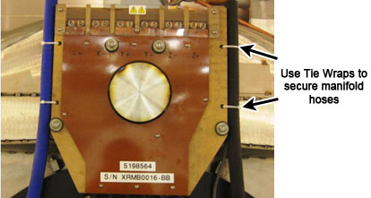

Operating Documentation
Direction 5500113, Rev# 3
Discovery MR750 3.0T Service Methods
Module Version 6.0, Version Date 5/7/09
Operating Documentation |
| Required Persons | Preliminary Reqs | Procedure | Finalization |
|---|---|---|---|
| 2 | 3 hours | 5 hours | 3-4 hours |
This procedure describes the replacement or installation process of the eXtreme Resonance Module Revision B (XRMB) (cable version) in the MR750 3.0T magnet.
| Item | Qty | Effectivity | Part# | Manufacturer | |
|---|---|---|---|---|---|
| Non-Magnetic Tools | 1 | - | 5112581 | - | |
| Non-ferrous Safety Shoes | 1 | - | - | - | |
| Safety Glasses | 1 | - | - | - | |
| General-Duty Gloves | 1 | - | - | - | |
| Item | Qty | Effectivity | Part# | Manufacturer |
|---|---|---|---|---|
| Nylon Tie Wraps | As needed | - | - | - |
| Item | Qty | Effectivity | Part# | Manufacturer | |
|---|---|---|---|---|---|
| XRMB Cable Busbar | 1 | - | 5305786 | - | |
| Busbar Step Gauge (part of FRU) | 1 | - | 5308419 | - | |
| ||||
| Strong Magnetic field! | ||||
| ferrous materials can become dangerous projectiles in the presence of the magnetic field produced by the magnet. | ||||
| Do not bring any ferromagnetic tools or equipments into the magnet room. |
| ||||
| ELECTRICAL SHOCK HAZARD! | ||||
| Contact with the connectors leading to an energized power supply can cause electrical shock. | ||||
| Follow lockout/tagout procedures while performing services to electrical connection components. |
| Condition | Reference | Effectivity |
|---|---|---|
- | - | |
- | - | |
Move the rear pedestal away from the magnet.Note: There should be two feet of service loop provided when removing rear pedestal. This will allow it to be moved back without disconnecting cables; however, it is possible that some cables may need to be disconnected. | - | - |
Follow all safety lockout/tagout procedures.
| NOTE: | Do not shut down the cryogen cooling system. |
Remove the 2 (two) M6x16mm SS screws and remove the top part (clear plastic) of the XRMB busbar safety cover (see Illustration 1).
Illustration 1: Busbar Safety Cover

Remove the 2 (two) M10x45mm SS hex head bolts that are securing the base part of the busbar safety cover. Pull the safety cover away from the terminals to get access to the brass nuts and the Nord-lock washers at the lug/terminal interface (see Illustration 2)
Illustration 2: Access to the Lug/Terminal Interface

| NOTE: | DO NOT remove the clamps on the busbar leads. Pull the safety cover as close to the clamp as possible (see Illustration 2). This should give enough clearance to the lug/terminal interface. |
Remove the 6 (six) brass nuts and Nord-lock washers that are securing the busbar lugs (see Illustration 3).
Illustration 3: Removing the Brass Nuts and Nord-lock Washers

At the top of the busbar, remove the 5 (five) M6 SS screws and the clear plastic cover (see Illustration 4).
Illustration 4: Disconnecting the Gradient Power Cables

Loosen the retainer blocks to allow slack in order to remove gradient power terminals from busbar.
Remove the 12 (twelve) brass nuts and Nord-lock washers that are securing the gradient power cables to the busbar terminals (see Illustration 4).
Remove the 4 (four) brass nuts, G10 flat washer, and rubber isolators that are securing the busbar assembly to the magnet. Remove the tie-wraps that are securing the manifold hoses to the busbar (see Illustration 5).
Illustration 5: Busbar Mounting Points

The busbar can now be removed from the magnet.
At each busbar support stud, install 1 (one) large G10 flat washer (32mm OD, part number 5268439) and 1 (one) rubber isolator (see Illustration 6).
Illustration 6: Busbar Support Studs (a) and Washer/Rubber Isolators (b)

| NOTE: | Do not shut down the cryogen cooling system. |
Obtain the new busbar assembly from the busbar shipping crate.
| NOTE: | Before installing the replacement busbar, inspect the surface that will connect the gradient coil and cables for oxidation. If the surface is oxidized, clean the surface. |
| NOTE: | DO NOT lift the busbar assembly by holding the leads. |
Slide the base part of the XRMB terminal safety cover on the busbar leads and let it hang loosely (see Illustration 7).
Align the 6 (six) busbar lugs with the XRMB coil terminal studs, smoothly push the lugs onto the terminal studs (see Illustration 7). Meanwhile, slide the busbar assembly onto the 4 (four) busbar support studs (see Illustration 8).
Illustration 7: Placing Busbar Lugs on the Terminal Studs

Illustration 8: Placing Busbar on the Support Studs

Once the busbar is mounted, place 1 (one) rubber isolator, 1 (one) large G10 flat washer (32mm OD, part number 5268439), 1 (one) M10x24 mm washer (part number 5146169), and 1 (one) brass nut at each of the 4 (four) mounting studs. The step of the rubber isolator faces inward.
Gradually tighten the 4 (four) brass nuts until the height of the G10 washer surface (front side) reaches 7.2mm. Use the step gauge (part of the busbar FRU) to verify the height of the G10 washer (see Illustration 9). Verify the busbar lugs are not hung up on the stud threads.
| NOTE: | Step gauge is required to help prevent stress fractures on the gradient lead terminals. |
Illustration 9: Checking the G10 Washer Height Using the Step Gauge

Place 1 (one) Nord-lock washer and 1 (one) brass nut at each of the 6 (six) XRMB terminal studs. Pull the safety cover away from the terminals to get access to the lug/terminal interface (see Illustration 2).
| NOTE: | Do not shut down the cryogen cooling system. |
| NOTE: | Always use the new Nord-lock washers that come with the
FRU package. DO NOT reuse the old Nord-lock
washers. Nord-lock washers consist of two pieces, which are generally glued together. Always use a complete set with two pieces joined together in correct orientation. DO NOT use a separated single piece. |
| NOTE: | DO NOT remove the clamps on the busbar leads. Pull the safety cover as close to the clamp as possible. This should give enough clearance to the lug/terminal interface (see Illustration 2). |
Gradually turn the 6 (six) nuts “finger-tight” - apply just enough torque so that the Nord-lock washers under the brass nuts are not moving freely. Do not over-tighten nuts.
Once the nuts are “finger tight”, use a 17mm non-magnetic wrench to continue tightening the nuts by an extra half turn. This applies about 20 ft-lbs torque to the nuts.
Illustration 10: Tightening the Brass Nuts and Busbar Lugs

| NOTE: | Proper torque to the nuts holding the busbar lugs is critical to the long-term stability of the gradient subsystem. |
Secure the base part of the terminal safety cover using 2 (two) M10x45mm SS hex head bolts and a regular G10 flat washer (24mm OD, part number 5146169). Secure the top part of the safety cover using 2 (two) M6x16mm SS screws (see Illustration 11).
Illustration 11: Busbar Safety Cover - 3mm Gap

| NOTE: | Check and make sure the safety cover does not touch the XRMB coil (there should be approximately 3mm gap between the two). If they are touching, insert a G10 flat washer between the turtle ring (black plastic flange ring) and the base part of the safety cover. |
At the top of the busbar, connect the 12 (twelve) gradient power cables to the busbar terminals and secure them using 1 (one) brass nut and 1 (one) Nord-lock washer at each of the 12 (twelve) terminals (see Illustration 4).
Secure the gradient cable guard (clear plastic cover) using 5 (five) M6 SS screws (see Illustration 4).
Secure the manifold hoses to the busbar using nylon tie-wraps.
Illustration 12: Tie-Wrapping Manifold Hoses to the Busbar

Install rear pedestal.
Replace all covers that were previously removed.
Remove lockout/tagout to turn system on.
Execute DQA scan in all 3 planes to verify proper geometry.